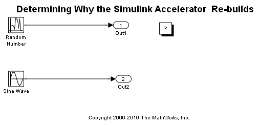

Simulink® Accelerator™ がコードを再生成している原因の特定
Simulink® Accelerator™ は、はっきりした理由もないのに、シミュレーションが開始されるたびにモデルのシミュレーション ターゲットを再生成することがあります。このデモでは、Simulink® MATLAB® ファイル API を使用して、Simulink Accelerator がターゲットを再生成し続ける原因を特定し、その後、この情報を使用してモデルを変更し、ターゲットが再生成される原因を取り除きます。
最初に、背景を少々説明します。Simulink Accelerator は、シミュレーション ターゲットと呼ばれる実行可能バージョンのモデルを作成して、通常の (高速化されていない) シミュレーション時のようにモデルを解釈するのではなく、このターゲットを実行することにより、モデルのシミュレーションの速度を向上させます。Simulink Accelerator は、モデルから C コードを生成して、MATLAB® 関数 mex を呼び出し、生成されたコードをコンパイルして Simulink に動的にリンクすることにより、シミュレーション ターゲットを作成します。
このコード生成およびコンパイル処理は、初めてモデルを高速化したときと、再生成する必要があるほど大幅にモデルが変更されたとき (たとえばブロックの追加後など) に実行されます。Simulink はモデルのチェックサムを使用して、コードを再生成する必要があるかどうかを判定します。このチェックサムは、モデルとそのモデルに含まれているブロックの属性に基づいて、md5 チェックサム アルゴリズムを使用して計算される 4 つの整数の配列です。モデルが変更されたことによってチェックサムが変更されると、Simulink Accelerator はシミュレーション ターゲットを再生成します。
どのようなモデルの変更によってチェックサムが変更され、コードが再生成されたのか不明な場合もあります。このデモでは、そのようなシナリオを作成した後、それを解決します。
目次
一時作業ディレクトリの作成
高速モードで実行するといくつかのファイルが作成されるため、まず、一時領域に移動します。
originalDir = pwd; tempDir = tempname; mkdir(tempDir) cd(tempDir)
実行時に毎回コードを再生成するサンプル モデルを開く
単純なモデルである slAccelDemoWhyRebuild は、アクセラレータ モードでシミュレートされるたびにコードを再生成します。
model = 'slAccelDemoWhyRebuild';
open_system(model)
 このモデルは、最初にアクセラレータ モードで実行したときは、予期したとおりコードを生成してコンパイルします。
simOutput = evalc(['sim(''',model,''')']); if ~isempty(strfind(simOutput,'Building the Accelerator target for model')) disp('Built Simulink Accelerator mex file') else disp('Did not build Simulink Accelerator mex file') end
Built Simulink Accelerator mex file
2 回目のシミュレーションでは、同じ Simulink Accelerator の mex ファイルが再利用されると予想するのは自然なことです。しかし、2 回目のシミュレーションでは、コードが再生成されます。
simOutput = evalc(['sim(''',model,''')']); if ~isempty(strfind(simOutput,'Building the Accelerator target for model')) disp('Built Simulink Accelerator mex file') else disp('Did not build Simulink Accelerator mex file') end
Built Simulink Accelerator mex file
原因を調べてみましょう。
Simulink Accelerator は、以前に生成されたコードが現在のモデル設定にまだ有効であるかどうかを判定するために、コードの生成に使用されたモデルのチェックサムと、現在のチェックサムを比較します。これらのチェックサムが等しい場合は、以前に生成されたコードがまだ有効であるため、Simulink Accelerator はそのコードを現在のシミュレーションに再利用します。チェックサムの値が異なっている場合は、Simulink Accelerator はコードを再生成して再作成します。したがって、チェックサム計算の詳細を調べると、Simulink Accelerator がコードを再生成した原因を解明できます。
チェックサムの詳細の取得
次のコマンドによって、モデルのチェックサム計算の詳細が取得されます。
[cs1,csdet1]=Simulink.BlockDiagram.getChecksum(model);
最初の出力は、モデルのチェックサム値そのものです。2 つ目の出力は、チェックサム計算に入れられたものの詳細を示しています。2 回目のチェックサムと詳細を取得しましょう。
[cs2,csdet2]=Simulink.BlockDiagram.getChecksum(model);
これらの 2 つのチェックサム値を比較するということは、Simulink Accelerator がコードを再生成するかどうかを判定するのと同じことです。Simulink Accelerator が実行時に毎回コードを再生成するという事実に基づいて予想したとおり、これらのチェックサム値は異なっています。
if (cs1 ~= cs2) disp('Checksums are different') else disp('Checksums are the same') end
Checksums are different
チェックサムが異なっていることがわかったので、次に問題となるのはその原因です。信号のデータ型、複数のブロック パラメーター値、ブロックの接続情報など、さまざまなものがチェックサム計算に入れられます。チェックサムが異なっている原因を理解するには、チェックサムの計算に使用された項目に関して、何が変更されているのかを確認する必要があります。2 番目の引数として返されたチェックサム詳細に、その情報が示されています。
csdet1
csdet1 =
ContentsChecksum: [1x1 struct]
InterfaceChecksum: [1x1 struct]
ContentsChecksumItems: [237x1 struct]
InterfaceChecksumItems: [66x1 struct]
チェックサム詳細は、4 つのフィールドを持つ構造体配列です。これらのフィールドのうち、2 つはモデル チェックサムのコンポーネント チェックサム (つまり、ContentsChecksum と InterfaceChecksum) で、残りの 2 つは対応するチェックサムの詳細です。
まず、モデルの内容が異なっているのか、あるいはモデルのインターフェイスが異なっているのかを確認しましょう。
if (csdet1.ContentsChecksum.Value ~= csdet2.ContentsChecksum.Value) disp('Contents checksums are different') else disp('Contents checksums are the same') end if (csdet1.InterfaceChecksum.Value ~= csdet2.InterfaceChecksum.Value) disp('Interface checksums are different') else disp('Interface checksums are the same') end
Contents checksums are different Interface checksums are the same
詳細を使用した変更の特定
ContentsChecksum が変更されていることがわかったので、ContentsChecksumItems を調べて、何が変更されているのかを確認できます。
idxForDifferences=[]; for idx = 1:length(csdet1.ContentsChecksumItems) if (~strcmp(csdet1.ContentsChecksumItems(idx).Handle, ... csdet2.ContentsChecksumItems(idx).Handle)) idxForDifferences=[idxForDifferences,idx]; disp(['Handles different for item ',num2str(idx)]); end if (~strcmp(csdet1.ContentsChecksumItems(idx).Identifier, ... csdet2.ContentsChecksumItems(idx).Identifier)) disp(['Identifiers different for item ',num2str(idx)]); idxForDifferences=[idxForDifferences,idx]; end if(ischar(csdet1.ContentsChecksumItems(idx).Value)) if (~strcmp(csdet1.ContentsChecksumItems(idx).Value, ... csdet2.ContentsChecksumItems(idx).Value)) disp(['String Values different for item ',num2str(idx)]); idxForDifferences=[idxForDifferences,idx]; end end if(isnumeric(csdet1.ContentsChecksumItems(idx).Value)) if (csdet1.ContentsChecksumItems(idx).Value ~= ... csdet2.ContentsChecksumItems(idx).Value) disp(['Numeric values are different for item ',num2str(idx)]); idxForDifferences=[idxForDifferences,idx]; end end end
String Values different for item 72
idxForDifferences に示されているインデックスの項目が異なっていることがわかったので、2 つの ContentsChecksumItems 配列内にあるそれらの項目を調べることができます。
blk1 = csdet1.ContentsChecksumItems(idxForDifferences(1)).Handle blk2 = csdet2.ContentsChecksumItems(idxForDifferences(1)).Handle id1 = csdet1.ContentsChecksumItems(idxForDifferences(1)).Identifier id2 = csdet2.ContentsChecksumItems(idxForDifferences(1)).Identifier
blk1 =
slAccelDemoWhyRebuild/Random Number
blk2 =
slAccelDemoWhyRebuild/Random Number
id1 =
RunTimeParameter{'Seed'}.RTParamCSInfo.Data
id2 =
RunTimeParameter{'Seed'}.RTParamCSInfo.Data
両方ともハンドルは slAccelDemoWhyRebuild/Random Number です。これは、そのブロックのデータが変更されていることを示しています。両方とも識別子は RunTimeParameter{'Seed'}.RTParamCSInfo.Data です。これにより、ブロックの「Seed」という名前のランタイム パラメーターがそのデータ (つまり値) を変更していることがわかります。
Seed パラメーターを調べてみましょう。
get_param(csdet1.ContentsChecksumItems(idxForDifferences(1)).Handle,'Seed')
ans = floor((sum(clock)+rand)*10000)
Random Number ブロックの Seed パラメーターは floor((sum(clock)+rand)*10000) です。このパラメーターは、モデルが実行されるたびに変化します。このモデルでは [インライン パラメーター] 最適化が選択選択されていることが原因で既定ですべてのパラメーターが調整不可能なパラメーターとなります。パラメーターが調整不可能な場合、生成コードでそのパラメーターが必要な場所には Simulink Accelerator によってそのパラメーターの実際の値が定数式として挿入されます。そのため、調整不可能なパラメーターの値が変化すると、コードを再生成する必要があります。パラメーターが調整可能な場合、Simulink Accelerator によってそのパラメーターのグローバル変数宣言が生成され、生成コードでそのパラメーターが必要な場所にはその変数が使用されます。この設定を使用すると、Simulink Accelerator がコードを再生成することなく、パラメーターの値を変更できます。
再作成する必要をなくすためのモデルの変更
モデルが実行されるたびに Simulink Accelerator がコードを再生成しなくても済むようにするには、Random Number ブロック内の Seed パラメーターを調整可能なものにする必要があります。以下にその方法を示します。
まず、調整可能な Simulink.Parameter オブジェクトを作成します。このデモでは、これはコマンドラインを使用して行いますが、代わりにモデル エクスプローラーを使用することもできます。
initSeed = Simulink.Parameter;
initSeed.RTWInfo.StorageClass = 'ExportedGlobal';
initSeed.Value = floor((sum(clock)+rand)*10000)
initSeed =
Simulink.Parameter (handle)
Value: 20761501
RTWInfo: [1x1 Simulink.ParamRTWInfo]
Description: ''
DataType: 'auto'
Min: -Inf
Max: Inf
DocUnits: ''
Complexity: 'real'
Dimensions: [1 1]
次に、その調整可能なパラメーター オブジェクトをブロックの Seed パラメーターの値として設定します。
set_param(csdet1.ContentsChecksumItems(idxForDifferences(1)).Handle,'Seed','initSeed')
最後に、実行のたびにこのパラメーターの値を変更するように、モデルの InitFcn を設定します。
set_param(model,'InitFcn','initSeed.Value = floor((sum(clock)+rand)*10000);')
モデルがシミュレートされるたびにコードを再生成していないことの確認
アクセラレータ モードでモデルをシミュレートして、いくつかの点を変更したために予想されるとおりにモデルが作成されることを確認しましょう。
simOutput = evalc(['sim(''',model,''')']); if ~isempty(strfind(simOutput,'Building the Accelerator target for model')) disp('Built Simulink Accelerator mex file') else disp('Did not build Simulink Accelerator mex file') end
Built Simulink Accelerator mex file
2 回目のシミュレーションを実行しましょう。今回は、再生成は行われないはずです。
simOutput = evalc(['sim(''',model,''')']); if ~isempty(strfind(simOutput,'Building the Accelerator target for model')) disp('Built Simulink Accelerator mex file') else disp('Did not build Simulink Accelerator mex file') end
Did not build Simulink Accelerator mex file
Simulink Accelerator は、1 回目のシミュレーションのときにコードを生成するだけで済みました。
クリーン アップ
モデルを閉じて、生成されたファイルを削除します。
bdclose(model) clear([model,'_acc']) cd(originalDir) rmdir(tempDir,'s')